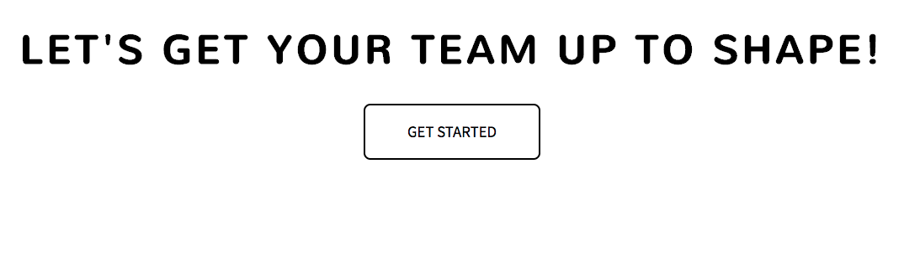

MERN in a Nutshell - Part 3

MERN in a Nutshell - Part 3
| PART 01 | PART 02 | PART 03 |
| PART 04 | PART 05 | PART 06 |
Right now all you really know is that we are building some vague application called TeamWhipper without much idea of what it will actually do. That kinda sucks, I know, but I've intentionally kept it vague so that we can focus more on the fine details of the project and really dive into what each line of code is doing. Parts of the project will be revealed as we progress - I figure it's the best way to focus on small pieces at a time and avoid information overload.
Alright, air cleared? Everyone chill? Solid.
So now that we're on the same page and the App.js file is set up, we're going to create a basic landing page with a welcome message and a get started button. This will involve creating a very basic view and controller. Nothing special, but it will introduce some new concepts and better familiarize you with the MVC framework. The github template I linked to in the last part already has a "getStarted.ejs" view and corresponding css styling pre-packaged. Please note that I won't be covering any HTML or css styling so it's essential to download these files if you want to code along.
In the previous episode, we had a few lines in our App.js file regarding controllers. This part in particular is important: "require('./controllers/initialize')". This means that we are going to need a controller called "initialize.js" in the controllers folder of our project. And since we required this file and called it as a method with an application object argument in our App.js file ("initializationController(app)"), we need to explicitly export it so nothing breaks:
module.exports = function(app){
};
Within this little block of code, we can start setting up routes. The first route we are going to create is one that will render our getStarted.ejs view when the home path is visited ("/"). To do this, we make use of the passed in application object and make a get() call with a callback function that takes request and response objects as parameters. Like so:
module.exports = function(app){
app.get('/', function(req, res){
res.render('getStarted');
});
};
Now, run your server by navigating to the location of your app.js file on your hard drive using a linux shell, type "nodemon app" and hit enter. Navigate to "localhost:3000" in your browser and you should see a happy little lander page (Bob Ross would be proud):
It doesn't do us much good if we have a "Get Started" button that leads nowhere though so let's redirect to a new page when clicked using this same controller and routes.
app.get('/createTeam', function(req, res){
res.render('createTeam');
});
Alright, so now should be redirected to a new view when the Get Started button is clicked:
In the next tutorial, we are going to cover basic data management using MongoDB and tease out our application a little more. Check out part 4!